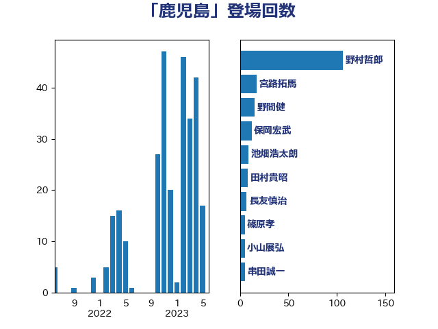

単語「鹿児島」

| 野村哲郎 | 自由民主党 | 106 回 |
| 宮路拓馬 | 自由民主党 | 17 回 |
| 野間健 | 立憲民主党 | 15 回 |
| 保岡宏武 | 自由民主党 | 12 回 |
| 池畑浩太朗 | 日本維新の会 | 9 回 |
| 田村貴昭 | 日本共産党 | 8 回 |
| 長友慎治 | 国民民主党 | 7 回 |
| 篠原孝 | 立憲民主党 | 5 回 |
| 小山展弘 | 立憲民主党 | 5 回 |
| 串田誠一 | 日本維新の会 | 5 回 |
| 梅谷守 | 立憲民主党 | 4 回 |
| 下野六太 | 公明党 | 4 回 |
| 青島健太 | 日本維新の会 | 3 回 |
| 太栄志 | 立憲民主党 | 3 回 |
| 三反園訓 | 無所属 | 3 回 |
| 須藤元気 | 無所属 | 2 回 |
| 赤羽一嘉 | 公明党 | 2 回 |
| 芳賀道也 | 国民民主党 | 2 回 |
| 竹詰仁 | 国民民主党 | 2 回 |
| 江藤拓 | 自由民主党 | 2 回 |
| 櫻井充 | 自由民主党 | 2 回 |
| 榛葉賀津也 | 国民民主党 | 2 回 |
| 東国幹 | 自由民主党 | 2 回 |
| 斉藤鉄夫 | 公明党 | 2 回 |
| 岸田文雄 | 自由民主党 | 2 回 |
| 國場幸之助 | 自由民主党 | 2 回 |
| 伊波洋一 | 無所属 | 2 回 |
| 三上えり | 立憲民主党 | 2 回 |
| 一谷勇一郎 | 日本維新の会 | 2 回 |
| 鬼木誠 | 立憲民主党 | 1 回 |
| 阿部弘樹 | 日本維新の会 | 1 回 |
| 金城泰邦 | 公明党 | 1 回 |
| 野田佳彦 | 立憲民主党 | 1 回 |
| 野中厚 | 自由民主党 | 1 回 |
| 遠藤良太 | 日本維新の会 | 1 回 |
| 足立敏之 | 自由民主党 | 1 回 |
| 西村康稔 | 自由民主党 | 1 回 |
| 西岡秀子 | 国民民主党 | 1 回 |
| 藤木眞也 | 自由民主党 | 1 回 |
| 船田元 | 自由民主党 | 1 回 |
| 窪田哲也 | 公明党 | 1 回 |
| 福岡資麿 | 自由民主党 | 1 回 |
| 田村智子 | 日本共産党 | 1 回 |
| 田名部匡代 | 立憲民主党 | 1 回 |
| 牧義夫 | 立憲民主党 | 1 回 |
| 渡辺創 | 立憲民主党 | 1 回 |
| 清水真人 | 自由民主党 | 1 回 |
| 河野太郎 | 自由民主党 | 1 回 |
| 比嘉奈津美 | 自由民主党 | 1 回 |
| 武井俊輔 | 自由民主党 | 1 回 |
| 柚木道義 | 立憲民主党 | 1 回 |
| 東徹 | 日本維新の会 | 1 回 |
| 杉尾秀哉 | 立憲民主党 | 1 回 |
| 日下正喜 | 公明党 | 1 回 |
| 徳永エリ | 立憲民主党 | 1 回 |
| 後藤茂之 | 自由民主党 | 1 回 |
| 山岡達丸 | 立憲民主党 | 1 回 |
| 山井和則 | 立憲民主党 | 1 回 |
| 小里泰弘 | 自由民主党 | 1 回 |
| 小沢雅仁 | 立憲民主党 | 1 回 |
| 小寺裕雄 | 自由民主党 | 1 回 |
| 寺田静 | 無所属 | 1 回 |
| 城井崇 | 立憲民主党 | 1 回 |
| 吉良よし子 | 日本共産党 | 1 回 |
| 佐藤正久 | 自由民主党 | 1 回 |
| 仁木博文 | 無所属 | 1 回 |
| 上月良祐 | 自由民主党 | 1 回 |